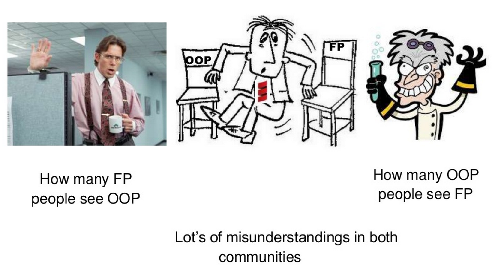
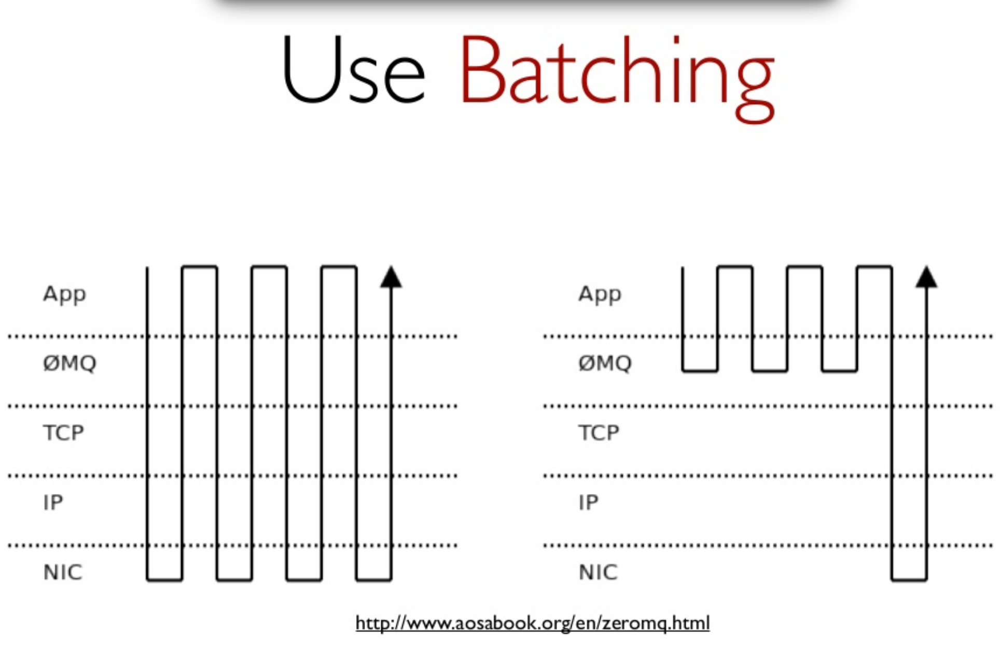

Scala Days 2013
by Hung Lin @hunglin
Scala the **** out of NYC
Hot Topics
Keynote: Scala with Style
by Martin Odersky, creator of scala
What is OOP good for?
OOP v.s. FP
Guideline #1
Keep it simple
Guideline #2
Don't pack too much in one expression
find meaningful names for the intermediate results. It's not easy but it's important
Guideline #3
Prefer Functional
Guideline #4
But, don't diabolize local state
vars v.s. vals
var interfaces = parseClassHeader()...
if (isAnnotation) interfaces += ClassFileAnnotation
val parsedIfaces = parseClassHeader()...
val interfaces =
if (isAnnotation) parsedIfaces + ClassFileAnnotation
else parsedIfaces
loops v.s. combinators
val totalPrice = items.map(_.price).sum
val totalDiscount = items.map(_.discount).sum
val (totalPrice, totalDiscount) =
items.foldLeft((0.0, 0.0)) {
case ((tprice, tdiscount), item) => (tprice + item.price, tdiscount + item.discount)
}
var totalPrice, totalDiscount = 0.0
for (item <- items) {
totalPrice += item.price
totalDiscount += item.discount
}
Guideline #5
Careful with mutable objects
val m = ArrayBuffer[Int]()
Guideline #6
Don't stop improving too early
Choice #1
Infix v.s. "."
Choice #2
Alphabetic v.s. Symbolic
val xs = List("apples", "oranges", "pears")
xs.foldLeft("")((result, i) => result + i)
("" /: xs)((result, i) => result + i)
Choice #3
Loop, recursion or combinators
Choice #4
Procedures or "="
DON'T use procedure syntax
def method: Unit = {
// operations
}
Choice #5
Private v.s. nested
Choice #6
pattern matching v.s. dynamic dispatch
the expression problem, check out scala class @ coursera, lecture 4.5 and 4.6
Choice #7
type parameters v.s. abstract type members
a good article by Bill Venners
Keynote: Scala in 2018
by Rod Johnson, creator of Spring
in 2018
myths / points
Any fool can write code that a computer can understand. Good programmers write code that human can understand.
- Martin Fowler
Debugging is twice as hard as writing the code in the first place. Therefore, if you write the code as cleverly as possible, you are, by definition, not smart enough to debug it.
- Brian Kernighan
Asynchronous Programming
asynchronous v.s. parallel
asynchronous v.s. batching
pitfall: thread pool?
for tomcat, one thread handles one request
pitfall: back pressure
pitfall: performance v.s. scaling issue
pitfall: theory v.s. reality
Some thoughts about our system
Upgrade to scala 2.10
Use akka
Use case class for data model
Use finagle for service modules
Questions?